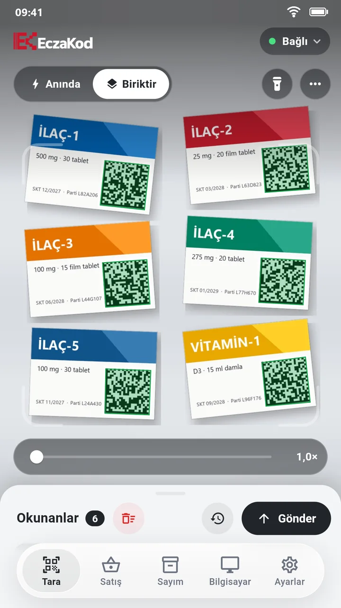
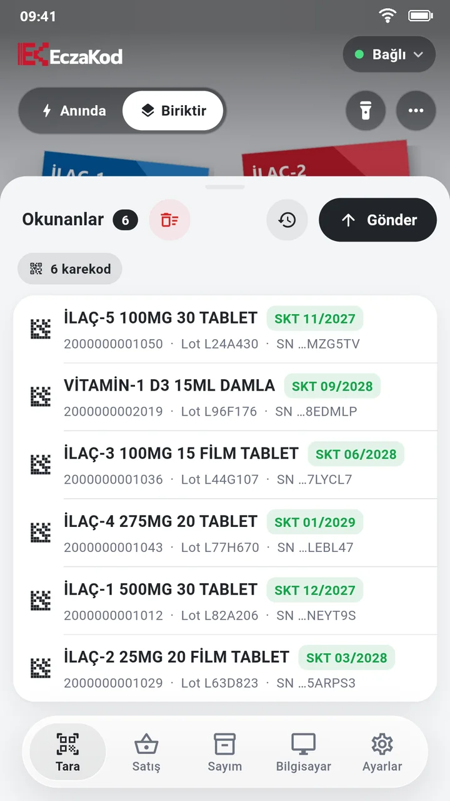

Reçetedeki kutuların hepsini tek seferde okutun
Kutuları tezgâha yan yana koyup kamerayı tutun. Okunan her karekod yeşil çerçeveyle işaretlenir ve listeye bir kez girer; ürün adı, son kullanma tarihi ve parti numarası hemen görünür.
- Biriktir: kodlar listede toplanır, Gönder'e basınca hepsi yazılır.
- Anında: okunan kod hemen yazılır; klasik el okuyucusu gibi.
- Eğik tutulan, küçük ya da siyah zemine basılmış karekodlar için yakınlaştırma, fener ve ters renk okuma.

